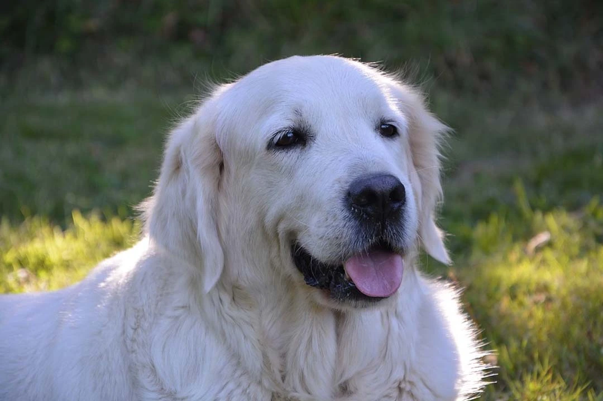
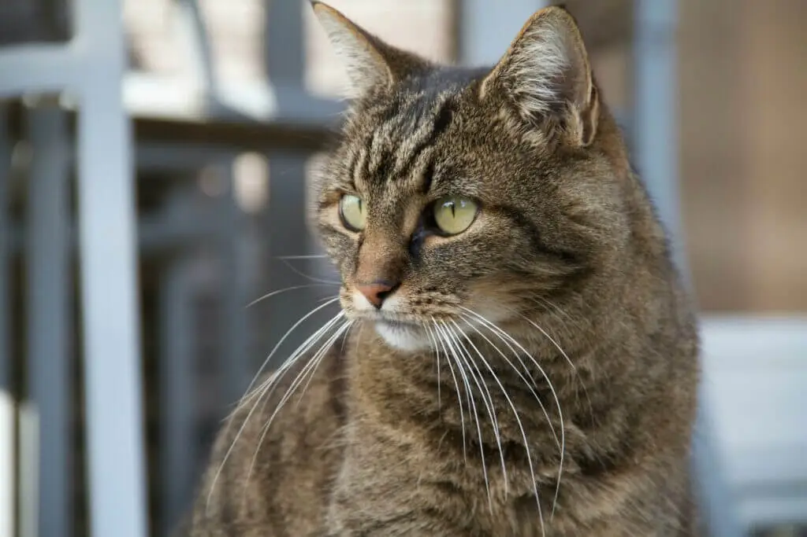
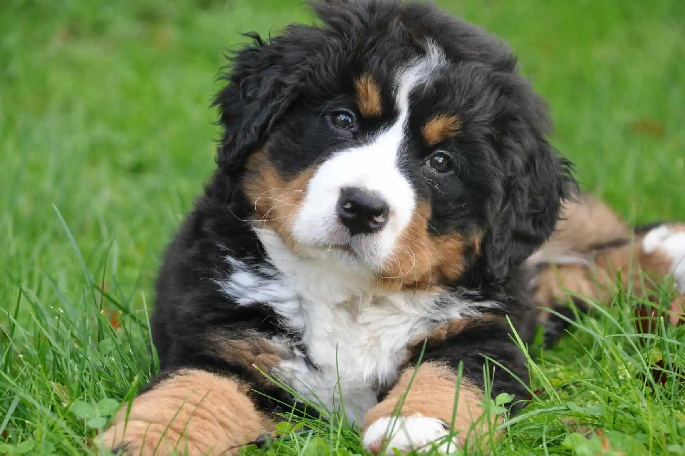

Perra · 2 años
Luna
Curiosa, energética y muy cariñosa. Busca una familia con ganas de pasear.
Conocer a LunaUna familia les cambia la vida
Conoce a quienes esperan una oportunidad y un hogar responsable.

Perra · 2 años
Curiosa, energética y muy cariñosa. Busca una familia con ganas de pasear.
Conocer a Luna
Gato · 1 año
Tranquilo y hogareño. Disfruta de las siestas y de la compañía cercana.
Conocer a Miau
Perro · 3 años
Juguetón y sociable. Le encanta aprender y compartir actividades al aire libre.
Conocer a MaxLa protectora te acompañará para encontrar un animal compatible con tu hogar y tu estilo de vida.